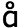
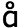

文字と発音 発音（母音＋二重母音）
●デンマーク語の母音
デンマーク語の母音は，全部で17種類 [i, e, æ, ȧ, ä, a, y, ø, ö,  , u, o, å, ɔ, , α, ә] あります．これは，母音が5種類である日本語話者にとっては，驚異的な数でしょう．
, u, o, å, ɔ, , α, ә] あります．これは，母音が5種類である日本語話者にとっては，驚異的な数でしょう．
また，デンマーク語の母音は一般的に口の開きが狭いため，各母音間の差があまり大きくありません．したがって，これだけ多くの数の母音を発音することが，私たち日本語話者にとっては，まずそれだけで難しいことに加えて，それらの母音を区別して発音しようにも，各母音間の差があまり大きくないため，その区別は非常に困難であると言わざるを得ません．
しかし，いくら母音の発音が難しいと言っても，それらの音の違いが，意味の違いにつながることを考慮すれば，これらの母音を何とか自分なりに身につける（発音し分ける・聞き分ける）ことが，デンマーク語を習得する上で非常に重要となってきます．
それでは早速デンマーク語の母音を聞いてみましょう．デンマーク語では，長母音と短母音の区別も，単語の意味を区別する上で必要となります．下の母音表では，各母音を短母音と長母音（長音符「：」が付いているもの）に分けて記述しています．
各母音に付けられているをクリックすると，画面が別ウィンドウで現れます．その画面の再生ボタンを押すと，当該母音が３回発音されます．発音する口の動き方を確認しながら，皆さんも発音してみましょう．
デンマーク語 母音表
（改良ダニア式 (DnMs)）
| 母音 | 前舌 |
中舌 | 後舌 |
| 非円唇 | 円唇 | 非円唇 | 非円唇 | 円唇 |
| 狭口 | i
, i:
| y
, y:
| | | u
, u:
|
| 半狭口 | e
, e:
| ø
, ø:
| ә
| | o
, o:
|
| 半広口 | æ
, æ:
| ö
, ö:
| | å
, å:
|
| 広口 | ȧ
, ȧ:
|
, :
| | |
, :
|
| 超広口 |
a
, ä ※ | | α
, α:
| ɔ
, ɔ
|
注 意
ɔは，例えばkommer [kɔmɔ]
＜来る（現在形）＞ のように，強強勢の位置に現れる [ɔ] を指し，ɔは，例えばkommer [kɔmɔ]
＜来る（現在形）＞ のように，弱強勢の位置に現れる [ɔ] を指します．この2種類の [ɔ] は，同じ発音記号を用いて表されていますが，それぞれ異なる発音であることを確認してください．
補 足
※ [ä] は本来は次のような語に見られる発音とされています．
ret [rät], træt [trät], træffe [träfә]
しかしながら現在，この [ä] はかなり高齢の標準デンマーク語話者に見られる発音とされ，若い世代ではこの音は用いられなくなってきています．今回このコンテンツにおいてデンマーク語の発音を担当しているのは，現在20代のデンマーク人女性のため，この母音を収録することは残念ながらできませんでした．
●母音四角形の説明
以下の図は，母音四角形と呼ばれており，母音を発音する際の口の形状と舌の位置を表しています．（尚，音長およびあいまい母音 [ә] は省略されています．）
縦軸は口の開きおよび舌の高さを表しています．つまり上記の図では，口の開きが一番狭く，舌が一番高くなっているのが [i] や [u] であり，口の開きが一番広く，舌が一番低くなっているのが [α] です．したがって，[i] や [u] を狭口母音と言い，[α] を超広口母音と言います． 横軸は，母音を発音するために口と舌とで空気の流れを狭めて調節する場所が口の前寄りであるか，後ろ寄りであるのかを示しており，左側にいくほど口の前寄りで発音し，右側にいくほど口の後ろ寄りで発音していることになります．したがって，[i, e, æ, ȧ, a, y, ø, ö, ] を前舌母音と言い，[u, o, å, ɔ, , α] を後舌母音と言います． また，ほとんど同じ位置に [i] と [y] が並列して表記されていますが，これは左側の列が，唇を平たくして発音する非円唇母音を，そして右側の列が唇を丸めて発音する円唇母音を表しています．
●個々の母音について
・前舌非円唇母音
前舌非円唇母音とは，舌が口腔の前方にある状態（つまり口の前寄りで空気の流れを狭めて調節する）で，そして唇を平たくして発音する母音のことです．この口の形状を保ったまま，口の開きを変えることで，以下の異なる母音が発音されます．
| 母音 | 説明 |
| [i (:)] | 非常に口の開きが狭い「イ」の音だと考えてください．「イ」よりもずっと口を横に引っ張るようにして発音します． |
| [e (:)] | 「イ（－）」に似ている音で，決して「エ（－）」に似ている音ではありません．直前の [i (:)] を発音するときの口の構えのまま，「エ（－）」を発音するつもりで発音します． |
| [æ (:)] | 口を「エ（－）」と発音するよりも少し狭く開いて，口を強く横に引っ張って発音します． |
| [ȧ (:)] | 「ア（－）」ではなく，「エ（－）」に近い音です． |
| [ä (:)] | [ȧ] よりもやや口の開きが広い音です．また口をそれほど横に引っ張る必要はありません．「エ」と「ア」の中間の音だと考えてください． |
| [a] | [ä] よりも口の開きが広い音です．「ア」の音に近い音ですが，「ア」よりもずっと口の前方で発音します． |
・後舌円唇母音
後舌円唇母音とは，舌が口腔の後方にある状態（つまり口の後ろ寄りで空気の流れを狭めて調節する）で，そして唇を丸くして発音する母音のことです．この口の形状を保ったまま，口の開きを変えることで，以下の異なる母音が発音されます．．
| 母音 | 説明 |
| [u (:)] | 口の開きをできるだけ狭くして，口の奥の方で「ウ（－）」と発音します．唇を丸くすることを忘れないでください． |
| [o (:)] | 口の開きは「オ（－）」と発音する場合よりも，「ウ（－）」と発音する場合に近いです．唇を丸くして，[u] の場合よりもさらに口の奥で発音するようにします． |
| [å (:)] | 口の開きは「オ（－）」と発音する場合に近いです．唇を丸くすることを忘れないでください． |
| [ (:)] | [å] を発音するときよりも，口の開きを広くし，そしてさらに口の奥で発音するようにします．唇を丸くすることを忘れないでください． |
| [ɔ] | 「ア」と「オ」の中間の音と考えてください．これまでの後舌円唇母音と比べて，唇の丸めはそれほど強くありません． |
・中舌／後舌非円唇母音
中舌／後舌非円唇母音とは，舌が口腔の中程あるいは後方にある状態（つまり口の中程あるいは後ろ寄りで空気の流れを狭めて調節する）で，そして唇を丸めないで発音する母音のことです．
| 母音 | 説明 |
| [α (:)] | [α:] （長母音）の場合は，「アー」よりも口の奥で発音するようにします．[α] （短母音）は，r音に隣接しない場合には，[α:]（長母音）に比べると，口の前方で発音されます． |
・前舌円唇母音
前舌円唇母音とは，舌が口腔の前方にある状態（つまり口の前寄りで口と舌とで空気の流れを狭めて調節する）で，そして唇を丸くして発音する母音のことです．この口の形状を保ったまま，口の開きを変えることで，以下の異なる母音が発音されます．
| 母音 | 説明 |
| [y (:)] | [i (:)] を発音するときの舌の形を保ちながら，唇を [u (:)] を発音するときのように丸くして発音します．[i (:)] を発音しながら徐々に唇を丸くしてみてください． |
| [ø (:)] | [e (:)] を発音するときの舌の形を保ちながら，唇を [o (:)] を発音するときのように丸くして発音します．[e (:)] を発音しながら徐々に唇を丸くしてみてください． |
| [ö (:)] | [æ (:)] を発音するときの舌の形を保ちながら，唇を [å (:)] を発音するときのように丸くして発音します．[æ (:)] を発音しながら徐々に唇を丸くしてみてください． |
| [ (:)] | [ȧ (:)] を発音するときの舌の形を保ちながら，唇を [(:)] を発音するときのように丸くして発音します．[ȧ (:)] を発音しながら徐々に唇を丸くしてみてください． |
・中舌非円唇母音
中舌非円唇母音とは，舌が口腔の中程にある状態（つまり口の中程で空気の流れを狭めて調節する）で，そして唇を丸めないで発音する母音のことです．
| 母音 | 説明 |
| [ә] | [ә] はあいまい母音と呼ばれ，これといった発音の特徴はありません．口をリラックスさせて発音してみましょう．尚，この音に強勢が置かれることはありません．日本人の耳には「エ」のように聞こえることが多いようです． |
●二重母音
二重母音とは，上で述べたデンマーク語の母音のうち，短母音と [] や [w] （いわゆる半母音と呼ばれる音）が連続したものを指します．
・[-] に終わる二重母音
[-] に終わる二重母音では，複数の母音との組み合わせが可能ですが，そのうち典型的なものとして [α] そして [ɔ] が挙げられます．
➢ いずれの場合も，[-] は「イ」のような音で発音されます．
| 発音（二重母音） | 例語 |
| [α] | vej
＜道＞ |
| regn
＜雨＞ |
| dejlig
＜素敵な＞ |
| [ɔ] | høj
＜高い＞ |
| løg
＜玉ねぎ＞ |
| nøgle
＜鍵＞ |
・[-w] に終わる二重母音
[-w] に終わる二重母音は，複数の母音との組み合わせが可能です．
➢ いずれの場合も，[-w] は「ウ」のような音で発音されます．
| 発音（二重母音） | 例語 |
| [iw] | livlig
＜生き生きとした＞ |
| [ew] | peber
＜胡椒＞ |
| [æw] | evne
＜能力＞ |
| [yw] | syvtal
＜数字の７＞ |
| [øw] | øvrig
＜別の，残りの＞ |
| [öw] | støvle
＜長靴＞ |
| [w] | lov
＜法律＞ |
| [αw] | hav
＜海＞ |
・[- ] に終わる二重母音
] に終わる二重母音